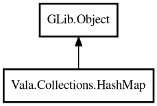

HashMap
Object Hierarchy:

Description:
public class HashMap<K,V> : Object
A hash table-based map from keys to values.
HashMap provides O(1) average-time lookup, insertion, and deletion. Inspired by Java's HashMap and Go's map.
For string keys and values, use GLib.str_hash and GLib.str_equal.
Example:
var map = new HashMap<string,string> (GLib.str_hash, GLib.str_equal);
map.put ("name", "Alice");
map.put ("city", "Tokyo");
assert (map.get ("name") == "Alice");
assert (map.size () == 2);
Content:
Creation methods:
Methods:
- public V @get (K key)
Returns the value associated with the specified key. Returns null if
the key is not found.
- public void clear ()
Removes all entries from the map.
- public bool containsKey (K key)
Returns whether the map contains the specified key.
- public bool containsValue (V value, EqualFunc<V> value_equal)
Returns whether the map contains the specified value. This requires a
linear scan of all values.
- public void forEach (owned BiConsumerFunc<K,V> func)
Applies the given function to each key-value pair in the map.
- public V getOrDefault (K key, V defaultValue)
Returns the value associated with the specified key, or the default
value if the key is not found.
- public bool isEmpty ()
Returns whether the map is empty.
- public List<unowned K> keys ()
Returns a list of all keys in the map. The order is not guaranteed.
- public void merge (HashMap<K,V> other)
Copies all entries from the other map into this map. Existing keys are
overwritten.
- public void put (owned K key, owned V value)
Associates the specified value with the specified key. If the key
already exists, the value is replaced.
- public bool putIfAbsent (owned K key, owned V value)
Associates the value with the key only if the key is not already
present. Returns true if the value was added.
- public bool remove (K key)
Removes the entry with the specified key. Returns true if the key was
found and removed.
- public uint size ()
Returns the number of entries in the map.
- public List<unowned V> values ()
Returns a list of all values in the map. The order is not guaranteed.
Inherited Members:
All known members inherited from class GLib.Object
- @get
- @new
- @ref
- @set
- add_toggle_ref
- add_weak_pointer
- bind_property
- connect
- constructed
- disconnect
- dispose
- dup_data
- dup_qdata
- force_floating
- freeze_notify
- get_class
- get_data
- get_property
- get_qdata
- get_type
- getv
- interface_find_property
- interface_install_property
- interface_list_properties
- is_floating
- new_valist
- new_with_properties
- newv
- notify
- notify_property
- ref_count
- ref_sink
- remove_toggle_ref
- remove_weak_pointer
- replace_data
- replace_qdata
- set_data
- set_data_full
- set_property
- set_qdata
- set_qdata_full
- set_valist
- setv
- steal_data
- steal_qdata
- thaw_notify
- unref
- watch_closure
- weak_ref
- weak_unref